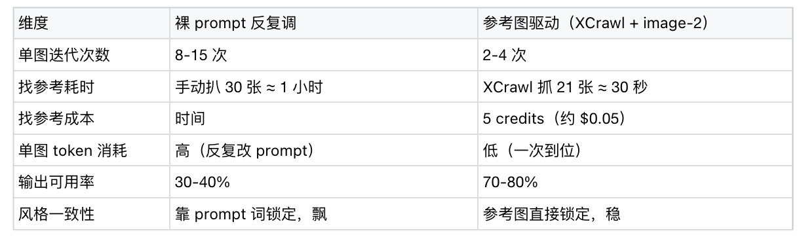
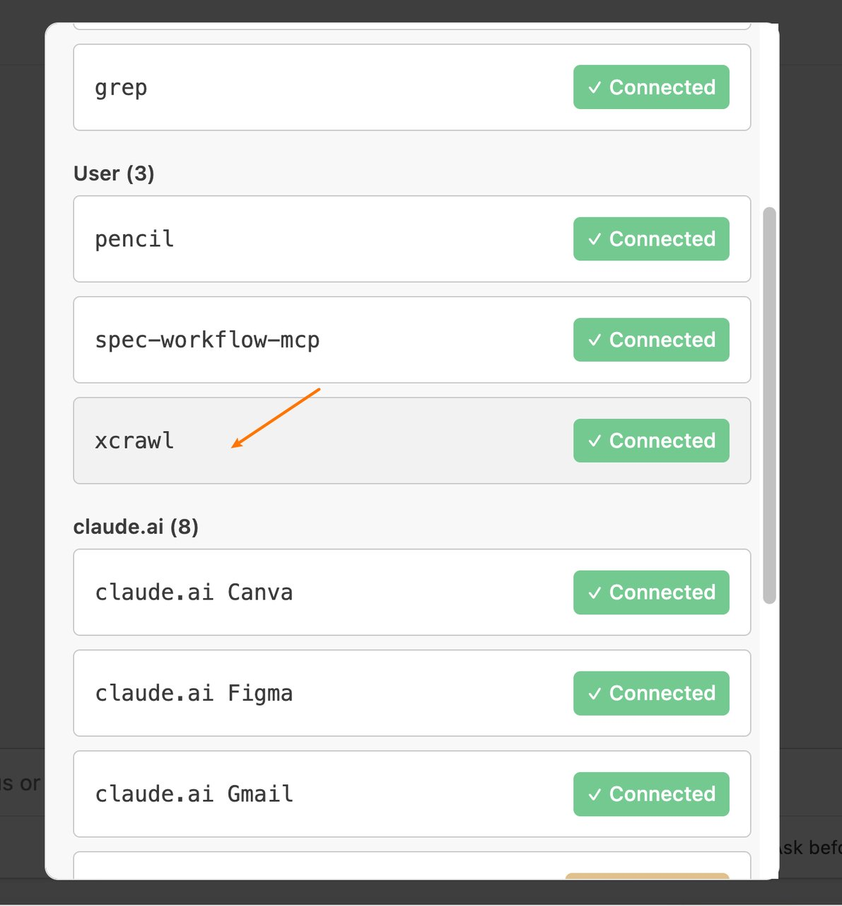
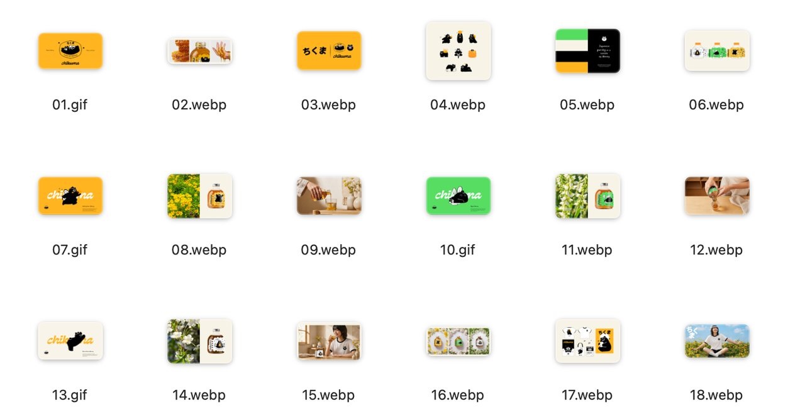
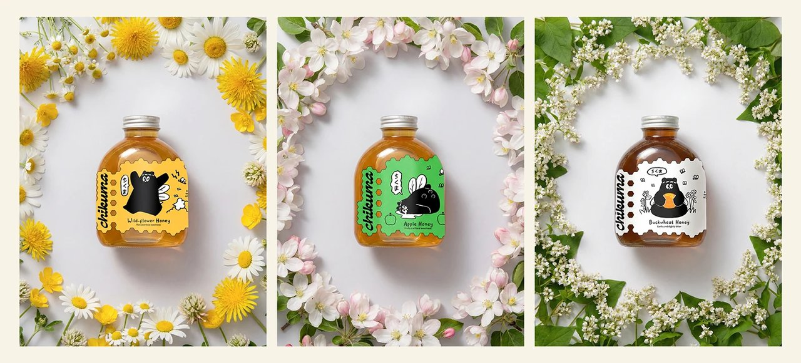
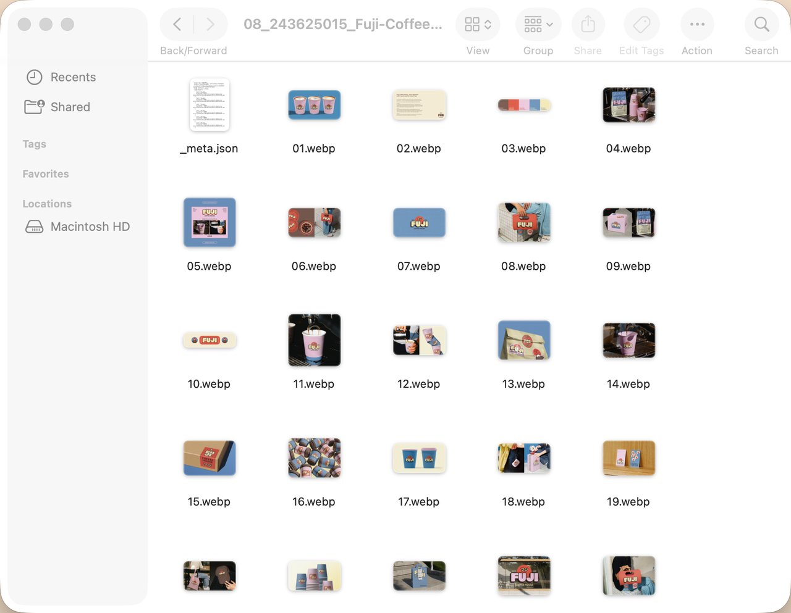
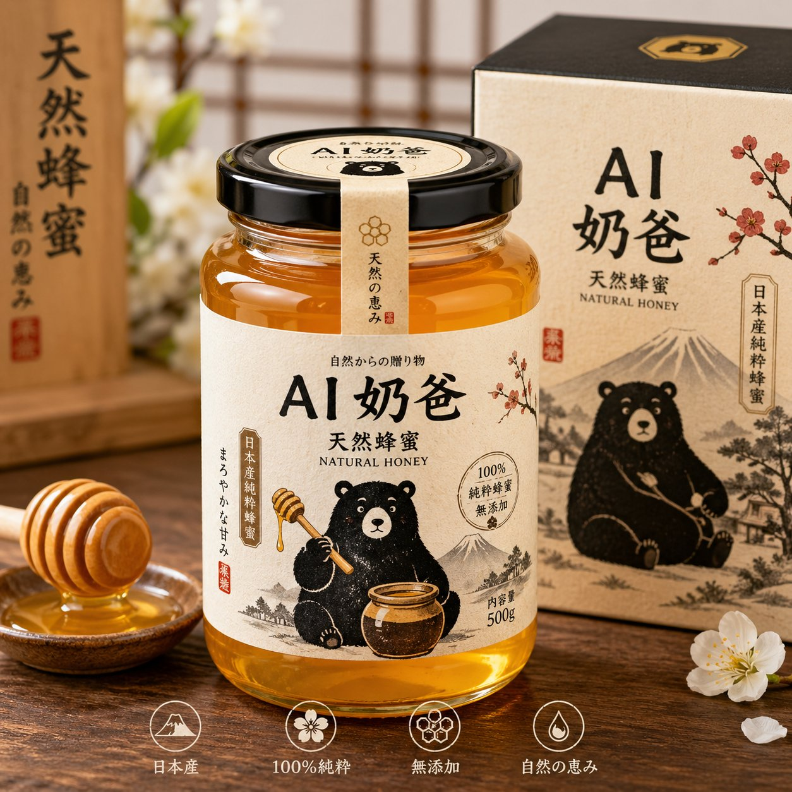
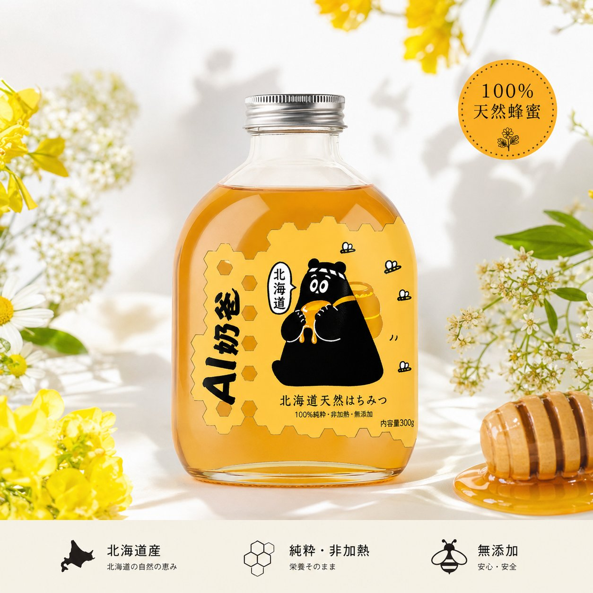

>
核心原则
GPT-Image-2 的美学基础已经足够强（比 DALLE-3 能打），继续卷 prompt 的边际收益在下降。真正要卷的是 **怎么给模型更好的视觉样本**。

**同一个 prompt 的对比：**

文字描述美学是「有损压缩」。参考图才是高质量样本。
Step 1：为什么要用参考图，不是更好的 prompt
| 维度 | 裸 prompt | prompt + 参考图 |
|---|---|---|
| 输出质量 | 能用，但普通 | 接近设计师水平 |
| 风格控制 | 靠文字堆砌 | 视觉样本直接传递 |
| 稳定性 | 随机性大 | 风格一致 |
| 边际成本 | 卷 prompt 收益递减 | 几张参考图释放模型潜力 |
GPT-Image-2 没有改变「ControlNet 永远比 prompt engineering 更接近控制」这个规律，只是把基础美学拉高了，让普通人更容易看见参考图的价值。
Step 2：以前找参考图为什么这么痛
| 方式 | 痛点 |
|---|---|
| 浏览器手工扒 | 30 张图 1 小时起，最低效但最常用 |
| 自己写 Python 爬虫 | 反爬规则常改，代理池要维护，单 IP 一月几十刀 |
| headless Chrome / Playwright | Cloudflare 一上就跪，维护成本是工具本身的好几倍 |
**核心问题：** 这些方式都把「找参考」当一次性任务。但每个新项目、新风格、新品类，都要重新找一遍。
Step 3：XCrawl MCP 接入
>
接入命令
claude mcp add xcrawl --url https://mcp.xcrawl.com/你的KEY/mcp
把「你的KEY」换成真实 key，不要带花括号，直接拼到 URL 里。
验证接入
在 Claude Code 里输入：
/mcp
看到 xcrawl 在列表里就接好了。
边界说明
XCrawl **只抓公开页面**。登录态后、付费墙后、私密内容不碰。

Step 4：完整工作流 — Behance 参考图 → GPT-Image-2 主图
为什么要去 Behance 抓参考
不用淘宝/拼多多/1688 的原因是：大家都在扒同行商品页，最后只会卷成同一种低端电商味。
真正的杠杆是去 **Behance / Dribbble** 抓已经过审美验证的品牌设计和包装设计，让 GPT-Image-2 把你的商品图档次直接抬高。
4.1 先抓一个具体项目页
以 Pinch & Punch 做的 Chikuma Honey Packaging 为例（日本长野县蜂蜜品牌，黑熊吉祥物风格）：
在 Claude Code 里说：
用 xcrawl 的 scrape 工具抓 https://www.behance.net/gallery/245101437/Chikuma-Honey-Packaging 输出 markdown 抽取 title / designer / description / tags[] / images[] / tools[]
返回数据：
title: Chikuma Honey Packaging designer: Pinch & Punch tags: branding / packaging / brand identity / honey / Japanese design / mascot images: 21 张高清原图 URL tools: Adobe Photoshop / Illustrator / After Effects


单页消耗：**5 credits**（base 1 + json_extract 4）
>
4.2 批量发现同类高质量项目
抓 Behance 搜索页找更多日系包装风格项目：
# 用 xcrawl_scrape 抓搜索页 # 加上 wait_until: networkidle # 从渲染后的 markdown 里用正则提取项目 URL /gallery/\d+/[^\s\)]+
返回 24 个真实日系包装/品牌项目（例）：

4.3 把参考图变成 GPT-Image-2 的输入
从 21 张图里挑 5 张视觉信息量最高的静帧（跳过 GIF），给 GPT-Image-2 这样的 prompt：
基于以下参考图的视觉风格、色彩调性、字体感觉， 设计一款新的日本天然蜂蜜玻璃瓶包装。 保留参考的构图节奏和品牌识别风格， 主体改为我自己的蜂蜜品牌： AI 奶爸 · 北海道天然はちみつ。 要求： 完美电商背景， 适合商品主图， 画面干净高级， 1024x1024。
附上 3-5 张同一项目里筛出来的参考图 URL。


Step 5：这笔账怎么算
| 对比项 | 传统设计师 | AI + 参考图 |
|---|---|---|
| 一个 SKU 成本 | 几千块 | ~4 美分/张出图 |
| 风格探索 | 反复沟通（高级一点/再日系一点） | 跑 20-50 个方向，几块钱铺开 |
| 产出用途 | 最终交付稿 | 方向判断 + 投流素材测试 |
**真正省的不是「一张图多少钱」，而是第一轮设计探索成本。**
完整跑通这套工作流的总消耗：
踩坑 7 条（直接抄走）
2. **`output.formats: ["json"]` 不稳定** — 保险做法只要 markdown，自己 parse
3. **SPA 搜索页别用 xcrawl_map** — map 只看初始 DOM，容易把首页 feed 当搜索结果
4. **`ignore_query_parameters: true` 不是无脑开** — `?search=...` 这种真实路由参数会砍掉关键词
5. **位置参数要匹配目标站地区** — 美区用 `United States`，日区用日本
6. **批量前先跑 `xcrawl_key_status`** — 看余额，别跑一半中断
7. **VS Code 集成可能遇到 JSON schema 校验失败** — 先关掉 VS Code 的 JSON validation，Cursor/Claude Code 更顺
这个工作流适合谁
**核心心法：** 会写 prompt 说明你会用 AI。能自动找对的参考图、筛噪声、整理成结构化输入——说明你能用 AI 干活。
>
>
核心となる原則
GPT-Image-2の美的基盤はすでに十分に強力です（DALLE-3より高性能）。これ以上プロンプトを詰めても限界効用は低下しています。本当に取り組むべきは **いかにモデルにより良い視覚サンプルを与えるか** です。
**同じプロンプトの比較：**
テキストによる美の表現は「非可逆圧縮」。参考画像こそが高品質なサンプルです。
Step 1：なぜより良いプロンプトではなく参考画像なのか
| 観点 | プロンプトのみ | プロンプト + 参考画像 |
|---|---|---|
| 出力品質 | 使えるが普通 | デザイナーレベルに近い |
| スタイル制御 | テキストの積み上げに依存 | 視覚サンプルで直接伝達 |
| 安定性 | ランダム性が大きい | スタイルが一貫 |
| 限界費用 | プロンプト改善の収穫逓減 | 数枚の参考画像でモデルの潜在力を解放 |
GPT-Image-2は「ControlNetが常にプロンプトエンジニアリングより制御に近い」という法則を変えたわけではなく、基礎的な美の水準を引き上げたことで、一般の人々が参考画像の価値をより認識しやすくなったのです。
Step 2：従来の参考画像収集の痛点
| 方法 | 痛点 |
|---|---|
| ブラウザで手動収集 | 30枚で1時間以上、最も非効率だが最も一般的 |
| 自作Pythonスクレイパー | アンチスクレイピングルールが頻繁に変更、プロキシプールの維持費がかさむ |
| headless Chrome / Playwright | Cloudflare対策で頻繁に失敗、メンテナンスコストが本体の数倍 |
**核心的な問題：** これらの方法は「参考収集」を一回限りのタスクとして扱っています。しかし、新しいプロジェクト、スタイル、カテゴリごとに毎回収集し直す必要があります。
Step 3：XCrawl MCPへの接続
>
接続コマンド
claude mcp add xcrawl --url https://mcp.xcrawl.com/あなたのKEY/mcp
「あなたのKEY」を実際のKeyに置き換え、中括弧は付けずにURLに直接組み込みます。
接続の確認
Claude Codeで以下を入力：
/mcp
xcrawlがリストに表示されれば接続完了です。
制限事項
XCrawlは**公開ページのみ**を取得します。ログイン後、ペイウォール後、非公開コンテンツにはアクセスしません。
Step 4：完全ワークフロー — Behance参考画像 → GPT-Image-2商品画像
なぜBehanceから収集するのか
淘宝/拼多多/1688を使わない理由：誰もが同業者の商品ページを収集しているため、結局同じ低品質なEC風になってしまいます。
本当のレバレッジは **Behance / Dribbble** で既に美的検証を通過したブランドデザインやパッケージデザインを収集し、GPT-Image-2であなたの商品画像のレベルを直接引き上げることです。
4.1 具体的なプロジェクトページを取得
Pinch & Punchが手掛けたChikuma Honey Packaging（長野県の蜂蜜ブランド、黒熊マスコット風）を例に：
Claude Codeで次のように指示：
xcrawlのscrapeツールを使って https://www.behance.net/gallery/245101437/Chikuma-Honey-Packaging を取得 markdownで出力 title / designer / description / tags[] / images[] / tools[] を抽出
返却データ：
title: Chikuma Honey Packaging designer: Pinch & Punch tags: branding / packaging / brand identity / honey / Japanese design / mascot images: 21枚の高解像度原寸URL tools: Adobe Photoshop / Illustrator / After Effects
1ページあたりの消費：**5 credits**（base 1 + json_extract 4）
>
4.2 同類の高品質プロジェクトを一括発見
Behance検索ページからさらに和風パッケージスタイルのプロジェクトを発見：
# xcrawl_scrapeで検索ページを取得 # wait_until: networkidle を追加 # レンダリング後のmarkdownから正規表現でプロジェクトURLを抽出 /gallery/\d+/[^\s\)]+
24件の実際の和風パッケージ/ブランドプロジェクトを返却（例）：
4.3 参考画像をGPT-Image-2の入力に変換
21枚の画像から視覚情報量が最も高い5枚の静止フレーム（GIFは除外）を選び、GPT-Image-2に以下のようなプロンプトを与えます：
以下の参考画像のビジュアルスタイル、色彩、フォントの感覚に基づいて、 新しい日本製天然蜂蜜ガラス瓶パッケージをデザインしてください。 参考画像の構図のリズムとブランド識別スタイルは保持しつつ、 メインを自分の蜂蜜ブランドに変更： AI パパ · 北海道天然はちみつ。 要件： 完璧なEC背景、 商品メイン画像に適した、 クリーンで高級感のある画面、 1024x1024。
同じプロジェクトから選別した3〜5枚の参考画像URLを添付します。
Step 5：コスト計算
| 比較項目 | 従来のデザイナー | AI + 参考画像 |
|---|---|---|
| 1 SKUあたりのコスト | 数千円〜数万円 | 約4セント/枚 |
| スタイル探索 | 何度も打ち合わせ（もう少しかっこよく/もっと和風に） | 20〜50方向を一気に試行、数百円 |
| 成果物の用途 | 最終納品稿 | 方向性判断＋広告配信用素材テスト |
**本当に節約できるのは「1枚あたりの単価」ではなく、最初のデザイン探索コストです。**
このワークフローを完全に実行した場合の総消費：
落とし穴7選（そのままコピーして使用可）
2. **`output.formats: ["json"]` は不安定** — 安全策としてmarkdownのみを取得し、自分でパースする
3. **SPA検索ページでxcrawl_mapを使わない** — mapは初期DOMしか見ないため、トップページのフィードを検索結果と誤認しやすい
4. **`ignore_query_parameters: true` は無条件で使わない** — `?search=...` のような実際のルーティングパラメータが削除される
5. **位置パラメータは対象サイトの地域に合わせる** — 米国なら `United States`、日本なら日本
6. **一括実行前に `xcrawl_key_status` を実行** — 残高を確認し、途中で中断しないようにする
7. **VS Code統合でJSON schema検証エラーが発生する可能性** — VS CodeのJSON validationを先にオフにし、Cursor/Claude Codeの方が安定
このワークフローに向いている人
**核心の心構え：** プロンプトを書けることはAIを使いこなしている証拠。適切な参考画像を自動で見つけ、ノイズを除去し、構造化された入力に整理できること——それがAIで仕事ができるということです。
>